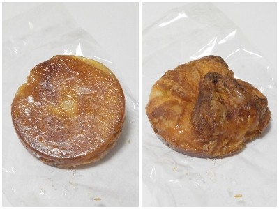
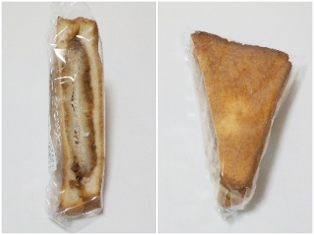

サンフラワーの美味しいクイニーアマン。
更新日 : 2026/09/18

カチカチの砂糖味もバター味も塩味もそれぞれあって、美味しいクイニーアマンでした。背徳感がある組み合わせですが、そういうの気にしたら菓子パンとか食べれないですよね。
デニッシュパンがふんわりしてて軽かったので、続けてもう一個食べたいって思いました。
160円プラス税でした。
島根県出雲市白枝町420-1トライアル出雲白枝店内
更新日 : 2026/09/18

カチカチの砂糖味もバター味も塩味もそれぞれあって、美味しいクイニーアマンでした。背徳感がある組み合わせですが、そういうの気にしたら菓子パンとか食べれないですよね。
デニッシュパンがふんわりしてて軽かったので、続けてもう一個食べたいって思いました。
160円プラス税でした。
更新日 : 2026/01/29
トライアルにあるのでトライアルのベーカリーコーナーかと思っていたら、島根米穀が運営しているBakery Sunflowerっていうパン屋さんでした。

食パンがコンガリ焼けてて美味しそうなホットカツサンドです。税込み205円。
ソースがしみ込んだとんかつを食パンではさんだだけのシンプルなものです。でもそれがいいんですよね。
ソース味はいいなーって思いながら食べました。